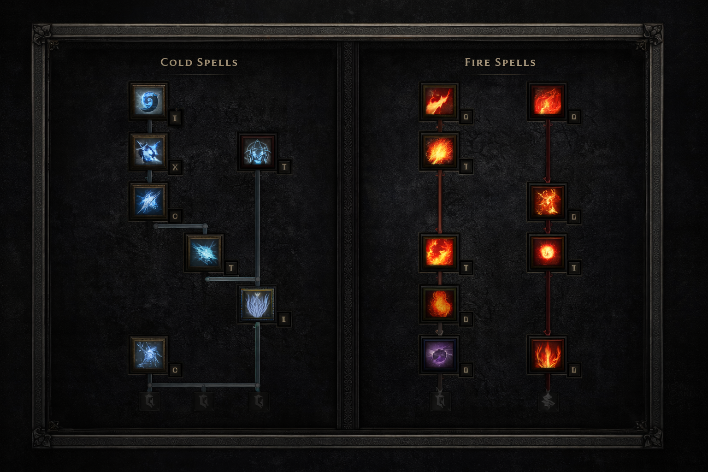
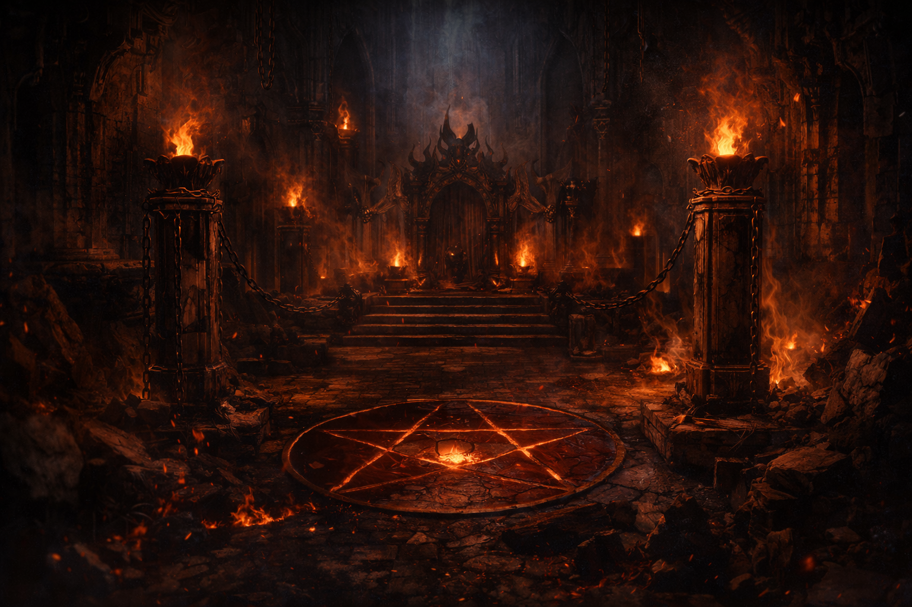
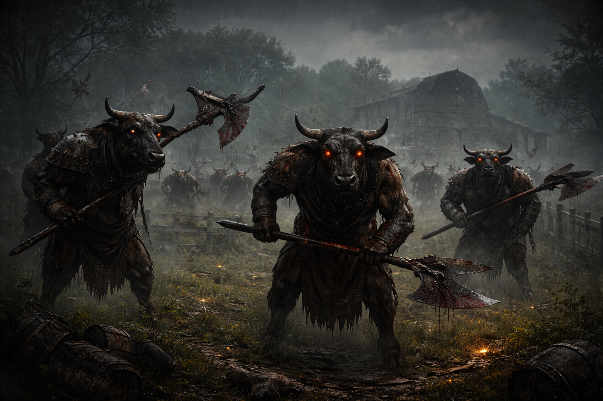

D2R Orb / Fireball Sorceress – Hybrid Guide
Flexible Hybrid-Sorc für RotWL & Non-Ladder. Kombiniert Flächenkontrolle durch Frozen Orb mit starkem Single Target via Fireball und bleibt stabil in Terror Zonen.
Core Skills

Main AoE Clear – ideal für dichte Packs und Map-Kontrolle.

Single Target & Unterstützung gegen Kälte-Immunes.
105% FCR Sweetspot
105% FCR sorgt für flüssigen Teleport und effizientes Fireball-Spamming. Hybrid-Builds profitieren stark von diesem Breakpoint.
Endgame Build-Struktur
Skillplan & Punktverteilung
Leveling-Reihenfolge
- Level 1–18: Zunächst Fire Bolt, danach Fireball priorisieren.
- Level 18: 1 Punkt in Teleport für Mobilität.
- Level 24: Optional 1 Punkt in Meteor als Vorbereitung für spätere Synergie.
- Level 30: Frozen Orb freischalten und vollständig ausbauen.
- Anschließend Fireball maxen.
Empfohlene Endgame-Verteilung (ca. Level 85)

Cold
20 Frozen Orb
5–10 Cold Mastery (abhängig von +Skills und gewünschter Resist-Reduktion)
Optionale Restpunkte in Ice Bolt bei stärkerem Cold-Fokus
Fire
20 Fireball
10–20 Punkte in Meteor oder
Restpunkte in Fire Mastery für konstanten Schaden
Utility
1 Static Field
1 Teleport
1 Warmth
1–5 Punkte in eine Armor-Variante (Frozen, Shiver oder Chilling) je nach Spielstil
Hinweis: Meteor dient primär als Synergie für Fireball und ist im Hybrid keine Pflicht-Fähigkeit. Überschüssige Punkte werden häufig in Fire Mastery investiert, um den Gesamtschaden stabiler zu skalieren. Zusätzliche Armor-Punkte erhöhen die Defensive und sind besonders im Hardcore-Modus sinnvoll.
Zielwerte & technische Eckdaten
- 105% FCR (Hybrid Sweetspot)
- 60–86% FHR je nach Komfort
- Max Resistenzen Hell (75%+)
- ~1.200–1.800 Life abhängig von Setup
- Cold Mastery nicht über-investieren (−100% effektive Grenze beachten)
Gear Core (ausgebaut)
| Weapon | Hoto / Tal Weapon / Eschuta (situativ) |
| Shield | Spirit Monarch / Stormshield (Maxblock Variante) |
| Armor | Tal Rasha / Vipermagi / Ormus (Fire-Fokus) |
| Amulet | Mara’s Kaleidoscope / Rare +2 Sorc / Tal Amulet |
| Belt | Arachnid Mesh |
| Gloves | Magefist |
| Boots | War Traveler / Rare Res Boots |
| Rings | 1x FCR Ring + SoJ / BK / Rare |
| Facetten | Cold oder Fire Facets je nach Fokus |
| Charms | Sorc Skillers / Life / Res / Mana / MF situativ |
| Merc | Insight (Stabilität) / Infinity (High-End Break) |
Farming Einschätzung

Sehr stabil – Dual-Element Vorteil.

Hohe Dichte + Hybrid-Sicherheit.
Mercenary Setup (technisch)
Grundsatz: Rolle des Merc im Hybrid-Build
Der Merc dient nicht nur als Tank, sondern als Schadensverstärker und Immunitätsbrecher. Je nach Setup verändert sich der Spielstil deutlich.
Aura-Vergleich (Act 2)
- Holy Freeze: Mehr Kontrolle, sichere Teleports, stabiler für Solo & Hardcore.
- Might: Erhöht physischen Merc-Schaden – sinnvoll bei Infinity-Setup.
- Defiance: Defensiv orientiert, eher Nischenlösung.
Insight-Variante (stabil & komfortabel)
- Weapon: Insight (Meditation = unbegrenztes Mana-Gameplay)
- Armor: Treachery (IAS + Fade) / Duriel’s Shell / Fortitude
- Helm: Tal Rasha / Vampire Gaze / Andariel’s Visage
Ideal für Hybrid-Spieler, die konstant Teleport + Fireball spammen. Mana-Probleme entfallen komplett.
Infinity-Variante (High-End Damage)
- Weapon: Infinity (Conviction Aura)
- Armor: Fortitude (maximaler Schaden)
- Helm: Andariel’s Visage (IAS / Life Leech)
Conviction reduziert gegnerische Resistenzen und kann Elementar-Immunitäten brechen. Wichtig: Cold Mastery wirkt nach Conviction. Effektiv sind −100% Resist als praktische Obergrenze. Infinity erhöht Fireball-Damage deutlich stärker als Orb.
Technische Details
- Base: Ethereal Elite Polearm (z. B. Thresher / Cryptic Axe)
- Life Leech: Pflicht für Überleben (Helm oder Armor)
- IAS-Breakpoints: Treachery + Andariel’s Visage erreichen stabile Angriffsgeschwindigkeit
- Resistenzen: Merc sollte in Hell max. Res haben
Praxis: Für komfortables Solo-Farming ist Insight oft die konstantere Lösung. Infinity lohnt sich primär im High-End-Setup oder bei Gruppen-Spiel.